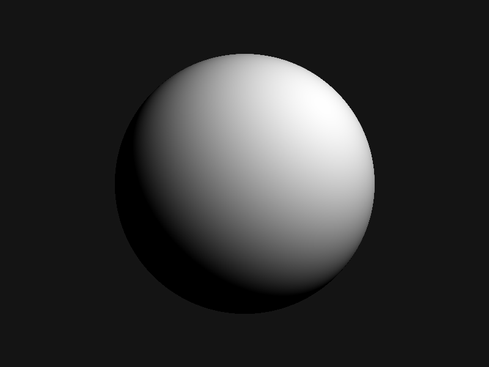
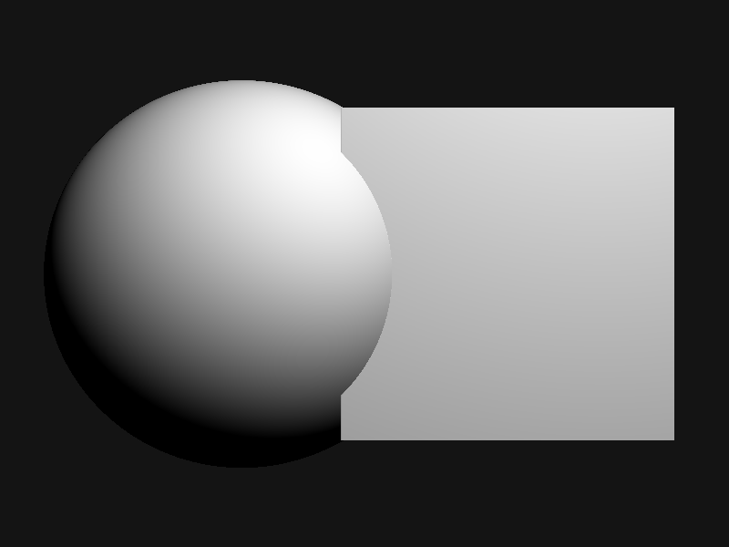
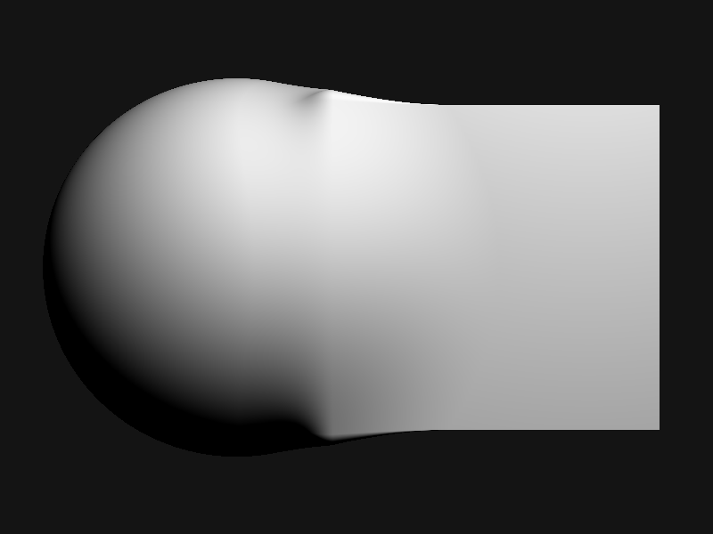
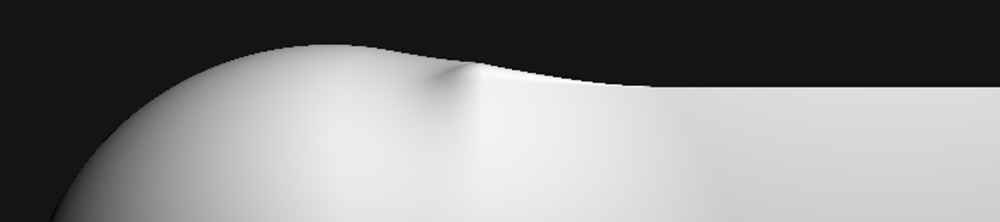
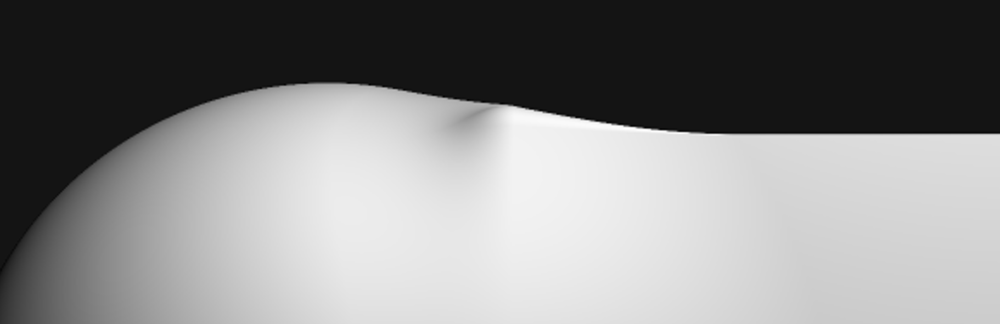

Marching with rays
I wanted to understand raymarching by actually building one, not by reading
about it. No engine, no shader language, no graphics library. Just plain
Java, a BufferedImage, and a function that answers one question: how far
is this point from the nearest surface.
That question turns out to be almost the whole renderer. The rest is walking toward the answer.
What a distance field actually is
A signed distance function takes a point in space and returns a single number: how far that point is from the nearest surface, negative if the point is inside the shape, positive if it's outside. For a sphere, that's about as simple as math gets:
sdSphere(p, center, radius) = length(p - center) - radius
A box is less obvious (the nearest surface depends on which side, edge, or
corner you're closest to), but it's still just arithmetic, no
triangles, no meshes. Inigo Quilez's
list of distance functions
is where these formulas actually come from. Both my sdSphere and sdBox
are his, translated line for line into Java.
Walking along the ray
Traditional raytracing solves for exact intersections between a ray and geometry. Raymarching cheats in a much lazier, much more general way, called sphere tracing: at every step, ask the distance field how far away the nearest surface is, then jump forward by exactly that much. Since nothing is closer than that distance, in any direction, the jump is always safe. Repeat until the distance is close enough to zero to call it a hit, or the ray has travelled so far it's clearly hit nothing.
distTravelled = 0
repeat up to maxSteps:
p = rayOrigin + rayDir * distTravelled
d = scene(p)
distTravelled += d
if d < surfaceThreshold or distTravelled > maxDist: stop
Point a grid of these rays out of a virtual camera, one per pixel, shade whatever they hit, and there's an image. First real output, one sphere, one light:

The shading itself needed one more piece: the surface normal at the hit point. There's no mesh to pull a normal from, so I estimated it by nudging the point slightly along each axis and checking how the distance value changes in response. That gradient points straight away from the surface, which is exactly the normal.
A second shape, and a seam
One shape gets old fast. Adding a box next to the sphere just means combining two distance fields into one scene function, and the simplest way to combine them is to take whichever is closer at any given point:
scene(p) = min(sdSphere(p), sdBox(p))
That works, technically. It also produces a hard, visible seam exactly where the two distance fields cross over:

Blending shapes smoothly
The fix is a smooth minimum instead of a plain one: rather than snapping to whichever shape is closer, blend between them over some small zone around where they'd otherwise cross. Inigo Quilez's smooth minimum article is where I got this from, and the whole function is small enough to write out in full:
smin(a, b, k):
h = max(k - abs(a - b), 0) / k
return min(a, b) - h*h*k / 4
Swap min for smin in the scene function and the same two shapes merge
into one continuous surface, like they were always a single piece of
material:

There's still a faint crease near the top, right where the blend zone runs out of room, but it reads as a fold in the surface rather than a seam. That's the whole difference a few lines of arithmetic can make.
Jagged edges, then not
Zoomed in, the edges were rough. Each pixel was sampling the scene at exactly one point, so a curve crossing a pixel either counted as fully in or fully out, no in-between, which is what a staircase pattern along every edge looks like:

The fix is the oldest trick in rasterization: sample each pixel more than once, at slightly different sub-pixel offsets, and average the results before writing the final color.
for each of 4 sub-pixel offsets in a 2x2 grid:
trace a ray through that offset
accumulate its color
write average(accumulated colors)
Four samples in a fixed quadrant pattern was enough to soften the staircase into a clean curve:

What 168 lines gets you
Sphere tracing, two kinds of signed distance field, a smooth blend between them, surface normals estimated from the distance field itself, diffuse lighting, and antialiasing. No mesh ever entered this program. Every surface that shows up in these images is just a function, evaluated however many times the camera happened to ask.
It's also obviously a starting point, not a renderer. There are no shadows (nothing stops a point from being lit even when something else is in the way), no reflections, and exactly two shapes. All of that is more distance functions and more math on top of the same loop, not a different approach. The loop itself, walk forward by the safe distance, ask again, stop when close enough, turned out to be the entire trick.
Further reading
The full source is on GitHub: Shaurya-34/raymarcher.
iquilezles.org is where nearly everything above actually comes from: distance functions, the smooth minimum, and most of what the raymarching community still builds on today.